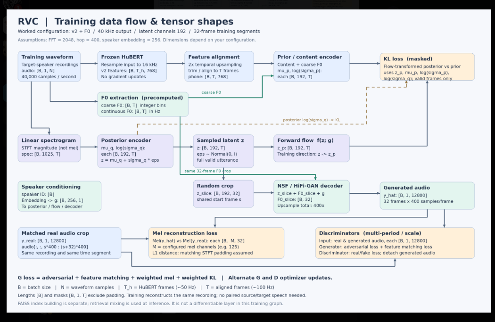
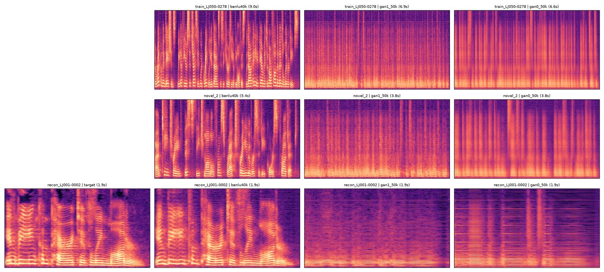

STS2026: a compact VITS-style speech model, built from scratch
TTS_<version> identifies revisions used to train and improve the TTS model. The integrated starting version is TTS_0.01. The latest source release, TTS_0.02, adds speaker-ID conditioning; multi-speaker weights have not been trained. Earlier notebooks retain their descriptive historical names.
The d/m prefix records a revision date or a task's setup date; it is separate from the model version number. RVC and other future models will use their own naming rules, to be defined when that work begins.
STS2026 implements the main ideas of VITS in one readable PyTorch notebook: a text encoder with a learned prior, a posterior encoder, a normalizing flow, monotonic alignment search, a duration predictor and a waveform decoder. The current work measures how well the posterior encoder and decoder reconstruct speech, and compares every architectural change against one frozen baseline.
Illustrative spectrogram. The amber band marks one decoder training crop: 32 frames × 256-sample hop = 8,192 samples, about 0.37 s of audio.
To-do
The TTS workstream is allocated as the TTS_0.10 ablation; RVC awaits group allocation; the listening improvement proposal is pending implementation.
12/10 · TTS_0.10 ablation training
Ready · training not startedAllocation of the 1/10 TTS task. Eleven runs measure which of the eight TTS_0.10 changes matter: each arm reverts one change to TTS_0.02 (leave-one-out). R0/R0b give the seed noise floor; E0 reverts everything.
| Owner | Arms | Question | GPU |
|---|---|---|---|
| Assigned by the team | R0, R0b | Reference and seed noise floor | L40S |
| Assigned by the team | G1, G2, G3 | Text encoder, posterior encoder, decoder | L40S |
| Assigned by the team | A1, A2 | Discriminator, feature matching | L40S |
| Assigned by the team | L1, O1 | Reconstruction loss, optimisation | L40S |
| Turino | E0, D1 | All TTS_0.02; text-length filter | RTX 4070 Ti SUPER |
Each run, from release tts-v0.10: python tools/train_tts010.py --arm <arm> --data-dir <LJSpeech-1.1>, 40,000 steps (1.6–3.0 h per arm on an RTX 4070 Ti SUPER). Upload the run folder to the team Drive; evaluation is run centrally. Step-by-step instructions, the run card and the reading rules: ABLATION_TTS_0.10.md.
1/10 · Implement a basic RVC system from the architecture diagram
Group allocation: pendingBuild the basic voice-conversion training path around the data flow below. The diagram is a reference architecture; confirm its assumptions against the chosen implementation before training.
RVC v2 + F0 · 40 kHz output · latent channels 192 · 32-frame training segments · FFT 2048 / hop 400 · coarse F0 embedding 256.


1/10 · Listening improvements · Turino
The original evaluation notebook plays only the first exported example. Its 8,192-sample crop at 22,050 Hz lasts approximately 0.37 seconds, which limits listening to local noise and distortion. Expand the listening interface so the team can inspect more samples and complete utterances.
Proposed work
- Expose all eight existing samples, labeled by utterance ID, with matched target, posterior-mean reconstruction and posterior-sample reconstruction players. Reuse the exported crops without retraining.
- Add full-utterance posterior reconstruction from a saved checkpoint: encode the complete reference spectrogram and decode both the posterior mean and a reproducibly seeded posterior sample. Export aligned reference and reconstruction audio with valid lengths and sample rates recorded.
- Present the full-utterance outputs in a sample selector or per-sample player groups. Use the same utterances and sampling settings when comparing original and new models.
- Retain the existing fixed-crop numerical evaluation as a separate protocol. Label full-utterance listening outputs clearly and verify the memory requirements and behavior of a decoder trained on short segments before drawing conclusions.
Acceptance criteria
- Each of the eight utterance IDs exposes a target / mean / sample listening group, with no silent truncation or padding presented as valid audio.
- A compatible checkpoint produces complete reference-length reconstructions without another training run, or reports an explicit compatibility or resource limitation.
- Sampling is reproducible and does not disturb the training random-number state. Original/new model listening comparisons use matching inputs and settings.
- Listening notes are written in English and include completion times. No MOS score or perceptual improvement is claimed unless actually assessed.
Scope: posterior reconstruction conditioned on real audio. Full-utterance playback is an additional diagnostic; its quality remains to be measured. This proposal does not establish text-only synthesis quality, convergence or generalization.
Versions
Each notebook revision owns its related experimental results. Dates below identify the revision; result blocks record their own run completion times.
17/9 · Original
The first notebook. Full VITS-style architecture, reconstruction-only overfit training, listening check by ear. No evaluation module, GAN loss fixed at zero.
451c635 · 2026-09-17 v1 · baseline20/9 · Original_eval
Same model definitions, now trained and scored under a fixed protocol with the shared sts_eval module. This is the reference for every comparison.
24/9 · Original_eval_gan — GAN-enabled notebook revision.
30/9 · TTS_0.01 — full-corpus training notebook.
7/10 · TTS_0.02 — optional speaker-ID conditioning; training not started.
12/10 · TTS_0.10 — benlu's model in the project harness, with switchable components.
Architecture
The model follows VITS: during training the posterior encoder sees the target spectrogram, the flow maps its latent into the text-conditioned prior space, and MAS finds a monotonic alignment between text tokens and frames. Only a random 32-frame slice of the latent is decoded to waveform, which keeps memory use low.
The Original_eval baseline trains reconstruction only. Duration and KL losses have weight 0, so the text path, flow, MAS and duration predictor are computed but do not receive gradient from the objective.
Module reference
| Module | Input → output | Configuration | In v1 objective |
|---|---|---|---|
| TextEncoder | [B, T_text] → features, μp, log σp | char + position embeddings, 6 Transformer layers, 2 heads, d = 192, FFN 768, dropout 0.1 | weight 0 |
| PosteriorEncoder | [B, 513, T] → z, μq, log σq, mask | 1×1 in-proj, 4 conv (k = 5, dilation 1/2/4/8), GELU, dropout 0.1, 192 latent channels | trained |
| ResidualCouplingBlock | z → z_p (reversible) | 4 additive coupling layers with channel flip, kernel 5, 4 conv layers each | weight 0 |
| DurationPredictor | detached text features → log duration | conv blocks, hidden 256, kernel 3, dropout 0.5 | weight 0 |
| MAS | Gaussian score → hard alignment | NumPy dynamic programming under no_grad | not differentiable |
| Decoder | [B, 192, 32] → [B, 1, 8192] | Conv k7 → 512 ch, ConvTranspose ×8, ×8, ×2, ×2 (512→256→128→64→32), ResBlock dilations 1/3/5, LeakyReLU 0.1, tanh | trained |
| Discriminator | waveform → scores | v0/v1: empty placeholder. gan-group: 1-D conv stack, base 32 channels | absent |
Training objective
All spectral losses are computed in float32 even when mixed precision is enabled.
| Term | Definition | v0 / v1 weight |
|---|---|---|
| Mel | L1 between log-mel spectrograms (80 bands, power 1.0, floor 1e-5) | 10.0 |
| MR-STFT | spectral convergence + log-magnitude L1 over (512,128,512), (1024,256,1024), (2048,512,2048) | 1.0 |
| Waveform | L1 between generated and target samples | 10.0 |
| Duration | masked MSE of predicted vs MAS log durations | 0.0 |
| KL | posterior after flow vs text prior | 0.0 |
| GAN | placeholder constant 0 in v0/v1; LSGAN in gan-group | 0 → 1.0 |
Timeline
- 2026-09-17 · 451c635v0 prototype published
Notebook, setup docs and the GitHub team handbook. Training loop has an empty
evaluate()hook. - 2026-09-20 · tuirno · c9f258c, PR #1v1 shared evaluation and measured baseline
sts_eval, fixed-batch protocol, local runner, checkpoint rescoring, 7 behavioral tests. Baseline completed on September 20 in Brisbane (≈15:27 UTC on September 19). - 2026-09-23 · Mou and Warneke · gan-groupGAN loss and discriminator
LSGAN losses, separate discriminator optimizer,
gan_weight = 1.0. Completion commit 07e663d; subsequently used in the full-training pair. - 2026-09-24 · benlu (local notebook)GAN merged with the v1 evaluation
DataParallel and autocast removed. New loss weights: mel 1, STFT 0.5, wave 10, duration 1, KL 1, GAN 1. Used for the subsequent 50,000-iteration GAN-on/off runs.
- 2026-09-29 · tuirno · Kaggle T4GAN vs no-GAN, 50,000 iterations each
Both runs completed. Spectral probe metrics slightly favour no-GAN; the discriminator overpowers the generator late. See the experiment report.
- 2026-10-07 · Turino · tts-v0.02TTS_0.02 speaker-ID conditioning
Optional learned speaker embedding throughout training and inference. Source release; not trained.
- 2026-10-12 · benlu, TurinoTTS_0.10 integration
benlu's model and recipe in the project harness with switches back to TTS_0.02, a 100-clip held-out split and one export per ablation arm. See TTS_0.10.
17/9 · Original
The first published notebook. It contains the complete VITS-style architecture and a working trainer, and it trains the posterior encoder and decoder to reconstruct a small batch of speech. Results were judged by listening. There is no evaluation module and the GAN loss is a zero placeholder.
Model definitions in v0 and v1 are identical. A cell-by-cell comparison found that only the trainer, evaluation setup and final run cells changed (cells 41–46). This page therefore focuses on how v0 trained and was inspected. The architecture itself is described on the overview.
Scope
The notebook's own description calls it an educational, non-adversarial VITS-style implementation. It trains with mel, multi-resolution STFT and waveform losses. The discriminator, adversarial loss and feature-matching loss of full VITS are left out on purpose.
- Data: LJSpeech 1.1 from a hard-coded Kaggle input path, 22,050 Hz,
N_FFT = 1024,HOP_LENGTH = 256. - Hardware target: Kaggle GPU T4 ×2. The trainer supports
nn.DataParallel, but the final build cell passesuse_multi_gpu=False. - Task: overfit one batch of 8 utterances to check that encoder and decoder can reconstruct audio at all.
Configuration
| Setting | Value |
|---|---|
| Global batch size | 8 |
| Data loader | shuffle, 4 workers |
| Training steps | 1,500 |
| Log / save every | 500 / 500 |
| Mixed precision / multi-GPU | fp16 autocast / off |
| Gradient clip | 1.0 |
| Optimizer / loss | Value |
|---|---|
| AdamW lr | 1e-4 |
| betas, eps | (0.8, 0.99), 1e-9 |
| weight decay | 0.01 |
| mel / STFT / wave | 10 / 1 / 10 |
| duration / KL | 0 / 0 |
| GAN | 10 × 0 (placeholder) |
Training loop
VITSTrainer.overfit_train() repeats one batch. Each iteration:
- Takes the first batch of the shuffled loader once, before the loop, and moves it to the device.
- Runs the full forward pass under fp16 autocast. The model picks a new random 32-frame start for every utterance.
- Slices the target waveform at
start_frames × 256and computes losses in float32. - Stops with
FloatingPointErroron a non-finite loss. - Scales, backpropagates, unscales, clips to norm 1.0, steps the
GradScaler. - Every 500 steps shows losses in the progress bar and calls
evaluate(outputs, batch), which is an empty stub. - Every 500 steps saves a checkpoint to
./model_weight_no_gan.
# v0 cell 42: the evaluation hook left for the team
# Pick one to two metric to evaluate the model performace (and plot a graph)
# Also create a graph which plotting the loss curve
def evaluate(outputs, batch):
pass
t_batch = trainer.overfit_train(total_steps=1500, save_every=500, log_every=500)How results were checked
The last cell re-encodes the returned batch in inference_mode and plays three clips for the first utterance:
Posterior mean
Decoder applied to μq, the noise-free latent (noise scale 0).
Posterior sample
μq + ε·σq with torch.manual_seed(1234) (noise scale 1).
Target
The matching slice of the real waveform.
It also prints posterior statistics: the standard deviation of the mean segment, the mean/min/max of σq and σq², and the standard deviation of the sampled z. Playback clamps audio to [−1, 1].
20/9 · Original_eval
v1 keeps every model definition from v0 and adds a fixed, repeatable way to train and score it. Its measured run is the reference that all later changes are compared against. The GAN loss is still zero.
What changed from v0
sts_eval/reconstruction.py:ReconstructionEvaluator, metric functions,plot_history, provenance helpers.- Training batch fixed to
LJ001-0001…LJ001-0008in that order, instead of the first shuffled batch. - Seeds fixed: training 2026, evaluation 1234. cuDNN deterministic, benchmark off.
- Budget raised to 2,000 iterations. Evaluation at 0, 500, 1000, 1500, 2000.
- Optimizer hook counts actual updates, separate from attempted iterations.
- Per-run directory with
run_config.json,status.json, training history, checkpoints and scored WAVs. - Local runner, report generator, subset downloader, Kaggle export, checkpoint rescoring.
- 11 tests covering metrics, crop padding, RNG restoration, a real optimizer update and export.
- The empty
evaluate()stub and the clamped listening cell.
Evaluation protocol
The evaluator measures spectrogram → posterior encoder → decoder → waveform on the same eight utterances used for training.
Baseline experiment configuration
| Variable | Value |
|---|---|
| Samples and order | LJ001-0001 to LJ001-0008, batch of 8 |
| Audio | 22,050 Hz, n_fft 1024, hop 256, win 1024 |
| Crop | deterministic central 32 frames = 8,192 samples. Short utterances are padded for decoding; only real samples are scored. Crops under 1,025 valid samples fail loudly. |
| Seeds | train 2026, eval noise 1234; CPU/CUDA RNG state and module train flags are restored after evaluation |
| Budget | 2,000 training iterations, eval every 500, log every 50 |
| Optimizer | AdamW lr 1e-4, betas (0.8, 0.99), eps 1e-9, wd 0.01, clip 1.0 |
| Loss weights | mel 10, STFT 1, wave 10, duration 0, KL 0 |
| Precision | AMP on, single GPU |
Metrics
All metrics are computed per utterance and averaged arithmetically, with no padding in the reduction. Lower is better. They are errors, not accuracy percentages.
| Metric | Definition |
|---|---|
| Log-mel L1 | 80 bands, magnitude mel, HTK scale, no normalization, natural log, floor 1e-5 |
| STFT spectral convergence | ‖|S| − |Ŝ|‖F / ‖|S|‖F, averaged over the three resolutions |
| STFT log-magnitude | L1 of log magnitudes, floor 1e-7, same three resolutions |
STFT resolutions (FFT, hop, window): (512, 128, 512), (1024, 256, 1024), (2048, 512, 2048); Hann, centered, reflect padding. These match the training loss, so the metrics overlap with the objective.
Measured baseline
| Mode | Metric | Iter 0 | Iter 2,000 | Change |
|---|---|---|---|---|
| mean | Log-mel L1 | 3.340485 | 0.560088 | −83.2% |
| mean | STFT SC | 2.202136 | 0.862740 | −60.8% |
| mean | STFT log-mag | 3.585402 | 1.160106 | −67.6% |
| sample | Log-mel L1 | 1.961753 | 0.557840 | −71.6% |
| sample | STFT SC | 2.196269 | 0.861846 | −60.8% |
| sample | STFT log-mag | 2.008696 | 1.105923 | −44.9% |
Reconstruction error on the training batch went down. This does not establish convergence, acceptable perceptual quality, or performance on unseen utterances. One seed was run, so training variation is unknown.
Reproducibility check
The final checkpoint was reloaded strictly in a fresh Python process after checking the data fingerprint and protocol, then rescored. Across 8 samples × 2 modes × 3 metrics, the largest per-sample absolute difference was 0. This confirms same-machine, same-environment rescoring only.
# final checkpoint SHA256
4cfbd3c87bcb84d456038a30f99cf50fb64c7dc35ab0be023878c08b853022d424/9 · Original_eval_gan
Extends Original_eval with a waveform discriminator, least-squares GAN losses and separate generator/discriminator optimizers. GAN components were completed on 23/9 by Mou and Warneke; benlu combined them with evaluation on 24/9.
Source: notebooks/vits-light_v1.ipynb, GAN component commit 07e663d. The earlier evaluated baseline remains the GAN-disabled snapshot at c9f258c.
30/9 · TTS_0.01
notebooks/vits-full-train.ipynb extends the GAN/evaluation model to full-corpus LJSpeech training, with duration and KL losses enabled. GAN-on and GAN-off exports use the same source notebook.
Committed on 30/9 at 3a5724b. The results below were run on 29/9 (UTC) using this full-training configuration before notebook integration.
7/10 · TTS_0.02 — Speaker-ID conditioning
Source: notebooks/vits-full-train.ipynb. Commit e81f0bd · 7/10/2026 (Australia/Brisbane).
Compared with TTS_0.01, this revision adds optional speaker IDs and a learned speaker embedding. The condition is passed to the posterior encoder, flow, duration predictor and waveform decoder; the data loader and checkpoints also retain speaker identities. The existing model structure and default single-speaker mode are retained.
This gives the model an explicit input for which speaker should speak, providing a basis for learning different voices within one model.
Training has not started. The effect on voice identity and audio quality has not been evaluated.
12/10 · TTS_0.10 — benlu's model with switchable components
Source: notebooks/vits-full-train.ipynb. Commit c06d618, pre-release tts-v0.10, merged to main · 12/10/2026 (Australia/Brisbane). Model and training recipe: benlu (final-vits, 40,000 steps in about 10 h on Kaggle T4 ×2); integration: Turino.
Compared with TTS_0.02, TTS_0.10 changes eight things: a text encoder with convolutional feed-forward blocks, a gated WaveNet posterior encoder, a multi-receptive-field decoder, multi-period and scale discriminators, feature matching, a mel × 45 reconstruction loss, batch 16 with fp16 training, and training on transcripts of at most 100 characters. Each change is a switch that can restore the TTS_0.02 component; flow, duration predictor and speaker-ID conditioning are kept.
These are the standard VITS/HiFi-GAN components for modelling waveform detail and periodicity. With benlu's weights the integrated model reproduces his original code exactly; with every switch at TTS_0.02 it reproduces the tts-v0.02 release.
| Checkpoint | Steps | Probe log-mel L1 | STFT SC | STFT log-mag |
|---|---|---|---|---|
| benlu TTS_0.10 | 40,000 | 0.562 | 0.548 | 0.979 |
| TTS_0.01, no GAN | 50,000 | 1.218 | 0.941 | 1.754 |
| TTS_0.01, GAN | 50,000 | 1.344 | 0.948 | 1.719 |
Fixed-crop probe LJ001-0001…0008, posterior mean, lower is better; one RTX 4070 Ti SUPER, 12/10. benlu's run did not train on the four probe clips longer than 100 characters; its error there (0.550) is no higher than on the four it trained on (0.574).

On four new sentences, Whisper medium gets 32% of the words wrong for benlu's checkpoint and 98–100% for TTS_0.01, whose outputs it does not recognise as speech; real LJSpeech recordings score 0.8%. Four sentences give only a first indication; the held-out evaluation uses 100.
No run has been trained with this notebook yet. The ablation (To-do) trains eleven arms. Details: TTS_0.10.md.